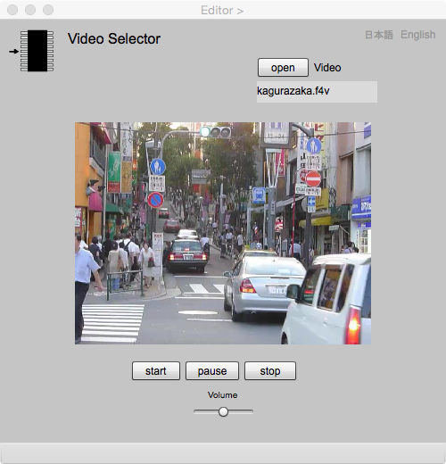

Video Selector
動画の取得
Video Selector は，動画データ (mp4) を地物属性にするためにあります．動画を属性にするには，このページで動画ファイルをオープンして，Editor ページで add します．
Video Selector

Figure 1. Video Selector
Fields
Video
動画ファイルをオープンすると，その名前がここに表示されます．
Buttons
open
動画ファイルをオープンします．音声ファイルは，あらかじめ，作業用フォルダーの下にmoviesという名前のフォルダーを設け，そこにまとめて入れておいて下さい．そうすることによって，作業用フォルダー全体を渡すことによって，別のパソコンで，簡単にデータを読むことが，できるようになります．
play
再生をするときは，このボタンを押します．
pause
再生を一次停止にするときは，このボタンを押します，ボタンを押すと，ラベルはrestartに変わります．それを押せば，再生が再開します．
stop
再生を停止するときは，このボタンを押します．
Volume
音声のボリュームを変えるときはスライダーを移動させます．
日本語
今あなたが読んでいるドキュメントが表示されます．
English
You can read the tutorial written in English.